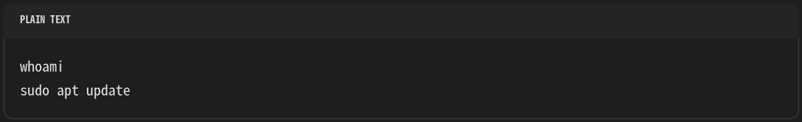
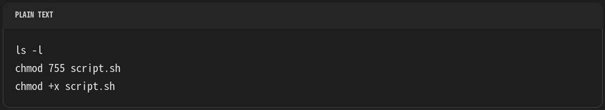
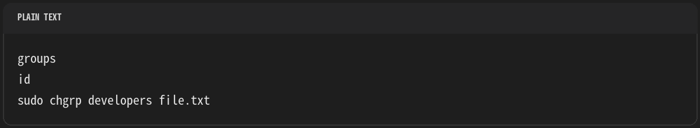
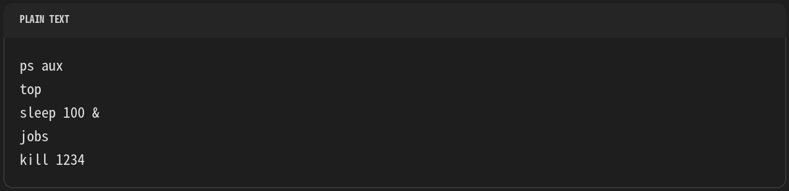
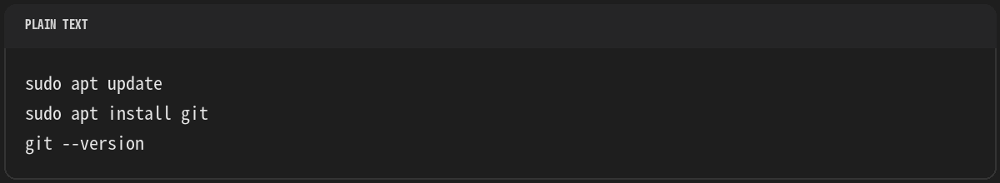

📚 1주차 Linux (2026.10.12 Mon ~ 2026.10.14 Wed)
Total : 3 days
📕 B. Linux 권한, 프로세스, 패키지 (2026.10.13 Tue)
📃 a. User (유저/사용자)
- User : Linux 시스템을 사용하는 개별 사용자 계정
- root : 시스템의 모든 권한을 가진 관리자 계정
whoami: 현재 사용자 확인sudo 명령어: 관리자 권한으로 명령어 실행passwd: 비밀번호 변경

PLAIN TEXT 코드
📃 b. File Permission (파일 권한)
- 파일과 디렉터리에 대한 읽기(r), 쓰기(w), 실행(x) 권한을 설정
- 권한은 소유자(User), 그룹(Group), 기타 사용자(Other) 기준으로 구분
| 권한 | 의미 | 숫자 |
|---|---|---|
r | 읽기 | 4 |
w | 쓰기 | 2 |
x | 실행 | 1 |
ls -l: 파일 권한 확인chmod: 파일 권한 변경chown: 파일 소유자 변경

PLAIN TEXT 코드
💡 755 의미: 소유자는 읽기·쓰기·실행, 그룹과 기타 사용자는 읽기·실행 가능
📃 c. Group (그룹)
- Group : 여러 사용자에게 공통 권한을 부여하기 위한 사용자 집합
- 파일과 디렉터리의 권한을 그룹 단위로 관리할 수 있음
groups: 현재 사용자의 그룹 확인id: 사용자 및 그룹 ID 확인chgrp: 파일의 그룹 변경usermod: 사용자 그룹 설정 변경

PLAIN TEXT 코드
📃 d. Processes (프로세스)
- Process : 실행 중인 프로그램
- PID : 프로세스를 식별하는 고유 번호
- Foreground : 터미널에서 직접 실행되는 작업
- Background : 터미널 작업과 별도로 실행되는 작업
| 명령어 | 기능 |
|---|---|
ps aux | 실행 중인 프로세스 확인 |
top | 프로세스 및 시스템 자원 사용량 확인 |
kill PID | 프로세스에 종료 신호 전달 |
jobs | 현재 셸의 작업 목록 확인 |
명령어 & | 백그라운드 실행 |

PLAIN TEXT 코드
※ 1234는 예시 PID입니다. 실제 종료할 프로세스의 PID를 확인해야 합니다.
📃 e. Package (패키지)
- Package : 프로그램과 실행에 필요한 파일을 묶어 배포하는 단위
- APT : Ubuntu에서 패키지를 설치하고 관리하는 도구
| 명령어 | 기능 |
|---|---|
sudo apt update | 패키지 목록 갱신 |
sudo apt upgrade | 설치된 패키지 업데이트 |
sudo apt install 패키지명 | 패키지 설치 |
sudo apt remove 패키지명 | 패키지 제거 |
apt search 검색어 | 패키지 검색 |

PLAIN TEXT 코드
💡 핵심 요약
- User : 사용자 계정과 관리자 권한 이해
- Permission : 파일 접근 권한(r, w, x) 관리
- Group : 사용자 그룹을 통한 권한 관리
- Process : 실행 중인 프로그램과 시스템 자원 관리
- Package : APT를 활용한 프로그램 설치 및 업데이트
🎯 학습 목표: Linux의 사용자·권한 구조를 이해하고, 프로세스를 확인하며, 필요한 개발 도구를 직접 설치할 수 있다.